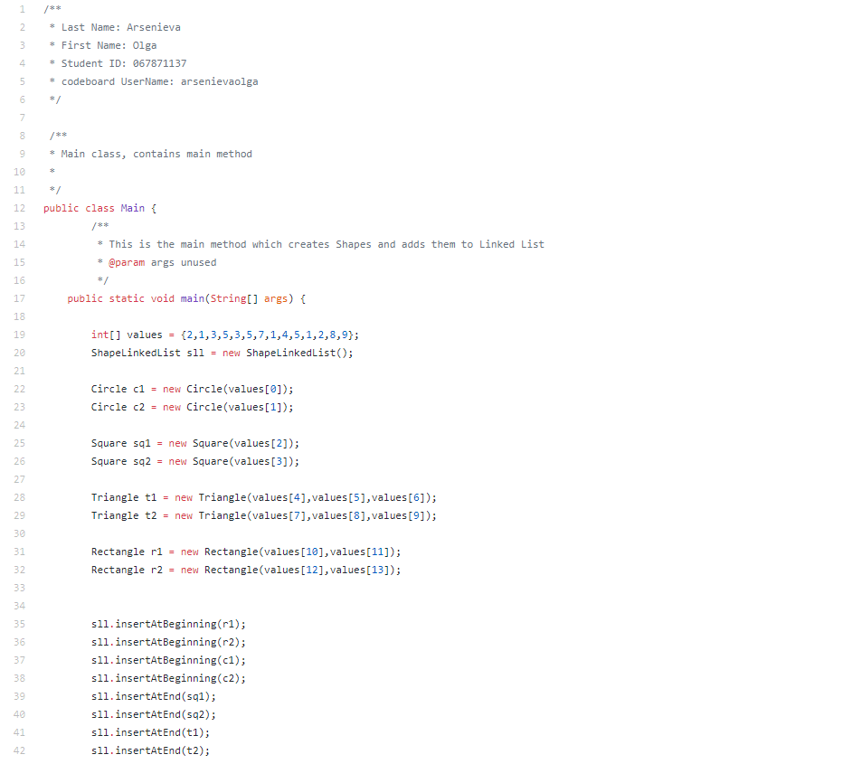
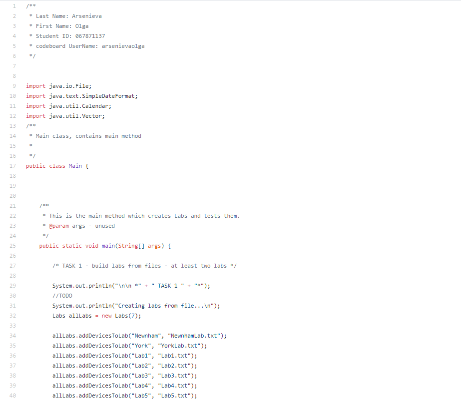

Olga Arsenieva's Portfolio
Wecreu - (capstone project)
Wecreu is a web application that generates an online store for a small business so it can save money on IT.
The generated online store is based on one of 4 templates and is hosted on the Wecreu server. The small business is able to edit the information on their site as well as manage inventory and post promotions.
This project was written in 4 months by a team of 5 people to finish our Seneca program requirements.
Environment: Apache Server, MySQLi database, Languages: PHP, HTML, CSS, JavaScript, Bootstrap Other: MyPHPadmin, Unix system Hosted on Seneca College Server.
My contribution to this project consisted of:
- Developed frontend and backend for managing store goods, including collecting, validating user data from forms and storing it in MySQLi database.
- Creation of the Blue template
- PHP script for store cart check-out order processing
- Many UI Mock-ups and Use Cases
- Database Design and creation
- Managing group project development website( for PRJ566 & PRJ666), taking notes on meetings, etc.

Linked List of Shapes
This Java program was an assignment for a Java course. It creates a linked list of geometric objects that implement shape interface, and performs functions on the linked list.
Labs Manager
This Java program was an assignment for a Java course. The program manages rentals of mobile devices in labs. It creates an array of labs from .txt files. Each of the labs contains a list of mobile devices that can be rented. There is also a number of static helper functions and exceptions defined to help deal with rentals and dates.
More to come!